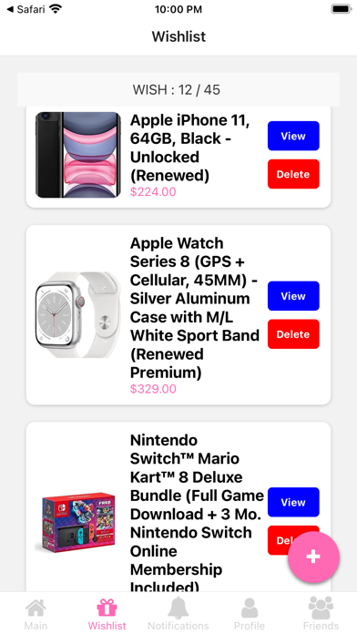
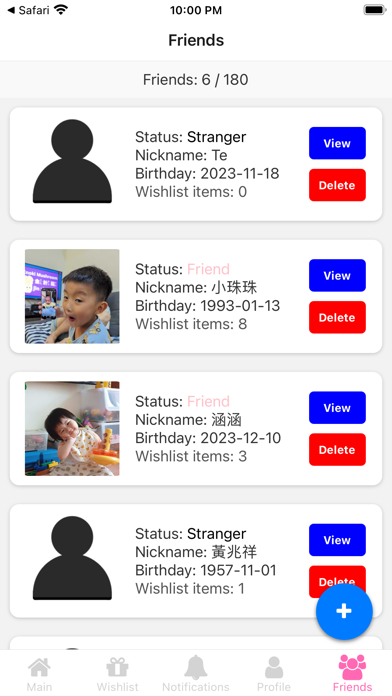
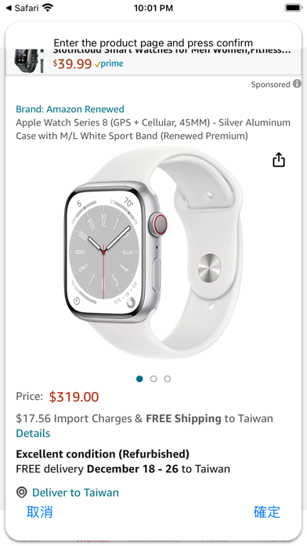
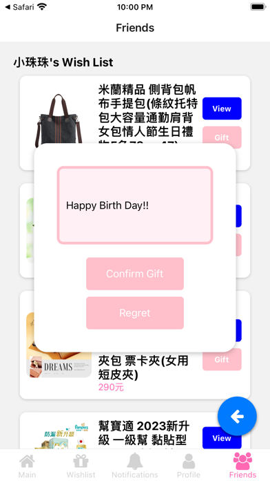
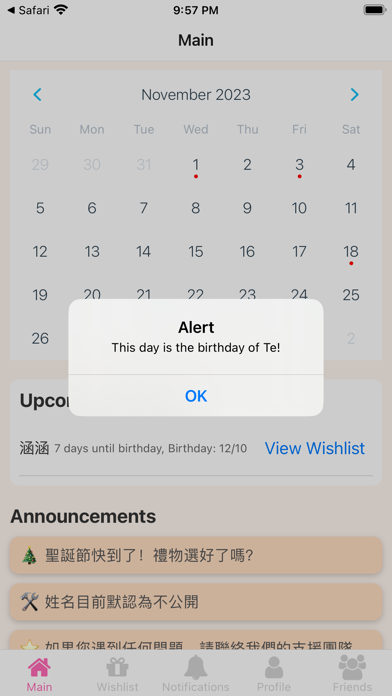

上傳照片或輸入文字，整理想要的商品與願望資訊。
社交 APP · INTRODUCTION
Wishlist.ai · Weesh
讓想要的東西與附近好物相遇。
拍照或輸入文字建立願望清單，探索附近二手商品，透過願望比對與站內聊天安排面交。
願望與附近好物
在這裡相遇。
依目前雙平台商店介紹：以照片或文字記錄願望，探索附近刊登，查看 AI 輔助整理的商品資訊，再用站內聊天約定面交。AI 辨識與估價僅供參考，交易前請自行確認商品狀況。
在地圖上查看附近二手商品，檢視照片、價格與刊登內容。
將自己的願望與刊登商品比較，找到可能合適的好物。
透過站內聊天聯繫賣家，交易前再確認商品實況與面交安排。
以下保留早期 Weesh 送禮版本介紹；現行功能以上方與商店資訊為準。
把功能留在
真正需要的時刻。
建立自己的願望清單、看看朋友真正想要什麼，也能從清單直接前往購買，讓心意少一點猜測、多一點準確。
把想要的禮物、商品與備註收進自己的清單，隨時更新。
從朋友公開的願望中理解對方真正需要什麼，不再靠猜。
從願望項目直接開啟商品資訊，縮短挑選與下單的流程。
清楚整理願望與狀態，讓多人送禮時更容易協調。
完整商店
宣傳圖集。
依照商店目前提供的宣傳素材完整排列；圖片維持原始比例，在手機上會自動換行，不再裁切主要畫面。





使用以前，
值得知道。
這些提醒協助你理解資料界線、平台狀態與合適的使用方式。
送禮之前
先看清單再挑選，保留驚喜，也降低買錯或重複的機會。
自己的清單
願望可以隨生活狀態調整，不需要一次把所有答案想完。
連結內容
商品價格、庫存與配送仍以實際商店頁面為準。